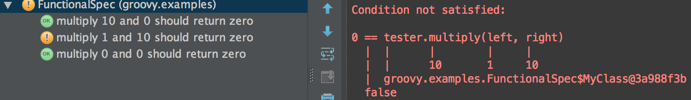

JUnit 4
@Test
public void multiplicationOfZeroIntegersShouldReturnZero() {
// MyClass is tested
MyClass tester = new MyClass();
// Tests
assertEquals("10 x 0 must be 0", 0, tester.multiply(10, 0));
assertEquals("0 x 10 must be 0", 0, tester.multiply(0, 10));
assertEquals("0 x 0 must be 0", 0, tester.multiply(0, 0));
}Spock
def "multiplication of zero integers should return zero"() {
given:
def tester = new MyClass()
expect:
0 == tester.multiply(10, 0)
0 == tester.multiply(0, 10)
0 == tester.multiply(0, 0)
}
Spock
@Unroll
def "multiply #left and #right should return zero"() {
given:
def tester = new MyClass()
expect:
0 == tester.multiply(left, right)
where:
left | right
10 | 0
0 | 10
0 | 0
}
What if there's an error?
EasyMock
List mock = createNiceMock(List.class);
expect(mock.get(0)).andStubReturn("one");
expect(mock.get(1)).andStubReturn("two");
mock.clear();
replay(mock);
someCodeThatInteractsWithMock(mock);
verify(mock);Spock
given:
List mock = Mock(List)
when:
someCodeThatInteractsWithMock(mock)
then:
1 * mock.get(0) >> "one"
1 * mock.get(1) >> "two"
Groovy's closure -> method technique works as well
given:
def mock = Mock(ArrayList)
mock.get(_) >> {int idx -> idx == 0 ? "one" : idx == 1 ? "two" : "WAH? ${idx}"}
expect:
mock.get(0) == "one"
mock.get(1) == "two"
mock.get(7) == "WAH? 7"If you have cglib in your classpath, you can mock classes (not just instances)
That's barely scratching the surface.
Check out the "interaction" docs for a lot more:
http://spock-framework.readthedocs.org/en/latest/interaction_based_testing.html
Spock transparently "appears" to be JUnit to tooling, so nothing special needs to be done in most tool-chains
Spock follows BDD terminology, so you write "features" (a.k.a. "tests") and "specification" (a.k.a. "test suites")
The easiest way to write a specification is to extend the Specification class
class MyClassSpec extends Specification {
// ...
}
To create a feature definition create a method that defines what is "given", what happens "when" then features is used, and what should "then" be true
def "this feature does ..."() {
given: // implicit if the code is not in another block, like "when"
def myClass = new MyClass()
myClass.initialize()
when:
def state = myClass.doesStuff()
then:
state.theNum == 12 // has implicit "assert" in front
}
Sometimes what you want to test is a simple function
def "this feature does ..."() {
expect: // combines "when" and "then"
Math.max(0, 3) == 3
}The lines in "then" or "expect" should evaluate to true/false, including Groovy "truthiness"
Set up a variable for the features to use
class MyClassSpec extends Specification {
@Subject
MyClass myClass = new MyClass()
def setup() {
myClass.initialize()
}
def cleanup() {
myClass.close()
}
}The @Subject is informational only, just to highlight the "subject under test"
A new instance of MyClass is created for each feature run
(At compile time, the "new MyClass()" is actually moved down into the "setup()")
Set up a variable for the entire specification to use (and share between features)
class MyClassSpec extends Specification {
@Shared
MyClass myClass = new MyClass()
def setupSpec() {
myClass.initialize()
}
def cleanupSpec() {
myClass.close()
}
}While a "static" field could also work, @Shared is much preferred because you have much better lifecycle control
When you want to check that an exception is thrown:
given:
crew << "Kirk"
when:
crew << "Picard"
then:
thrown TooManyCaptainsException
If you want to see the insides of the exception
given:
crew << "Kirk"
when:
crew << "Picard"
then:
def exp = thrown(TooManyCaptainsException)
exp.message == "Enterprise can only support one captain at a time, Picard."
exp.captain == "Picard"
Rather than manually tracking old state...
def stack = new Stack()
def "size increases when pushed"() {
when:
stack.push "bunny"
then:
stack.size() == old(stack.size()) + 1
}Ignoring a pending feature
class MyClassSpec extends Specification {
@Ignore
def "a feature that's pending"() {
expect:
false
}
def "a working feature"() {
expect:
true
}
}@Ignore can also be applied to the class to ignore the entire specification
For those times when you want to test just a single feature...
class MyClassSpec extends Specification {
def "a feature"() {
// ...
}
@IgnoreRest
def "another feature"() {
// ...
}
def "yet another feature"() {
// ...
}
}Only "another feature" will run; the other features effectively have @Ignore
Like @Ignore, this can also be applied to the class
Conditional features
@IgnoreIf({ System.getProperty("os.name").contains("windows") })
def "I'll run everywhere but on Windows"() { ... }
@Requires({ os.windows })
def "I'll only run on Windows"() { ... }Some of the properties provided are "os", "sys" (System.getProperty), "env" (environment variables), and "jvm" (JVM info)
While generally it's best if the order of execution of features are independant, sometimes you want/need to force their order
@Stepwise
class RunInOrderSpec extends Specification {
def "I run first"() { ... }
def "I run second"() { ... }
}
To set a timing threshold
@Timeout(10)
class TimedSpec extends Specification {
def "I fail after ten seconds"() { ... }
@Timeout(value = 250, unit = MILLISECONDS)
def "I fail much faster"() { ... }
}Of course for "real" tests you'd want something much more robust/accurate, but this is simple
The following are the same
class MyClassSpec1 extends Specification {
@AutoCleanup
MyClass myClass = new MyClass()
}
class MyClassSpec2 extends Specification {
MyClass myClass = new MyClass()
def cleanup() {
myClass.close()
}
}
If the method to clean up your class' resources is something other than close(), pass that as the value to @AutoCleanup
This also works on @Shared members
Similar to th @Subject annotation, another "documentation only" annotation that's useful is @Issue
@Issue("http://issuetracker.myco.com/ISSUE-14826")
def "should not have a regression bug anymore"() { ... }
For a lot more information, see the Extensions documentation
We saw some of this earlier:
@Unroll
def "multiply #left and #right should return zero"() {
given:
def tester = new MyClass()
expect:
0 == tester.multiply(left, right)
where:
left | right
10 | 0
0 | 10
0 | 0
}
External data source:
@Shared
@AutoCleanup
def sql = DBI.open("jdbc:h2:mem:test")
@Unroll
def "verify calculations for #a * #b == #c"() {
expect:
a * b == c
where:
[a, b, c] << sql.rows("select a, b, c from maxdata")
}
Making it easier to read, so that instead of
def "can tell if the string '#string' is an integer or not"() {
expect:
string.isInteger() == shouldBeInteger
where:
string | shouldBeInteger
"ABC" | false
"123" | true
"1.2" | false
"1 2" | false
"12a" | false
}Use a simple calculation in "where"
def "the string '#string' is #description"() {
expect:
string.isInteger() == expected
where:
string | expected
"ABC" | false
"123" | true
"1.2" | false
"1 2" | false
"12a" | false
description = expected ? "an integer" : "not an integer"
}For a lot more information, see the Data Driven Tests documentation